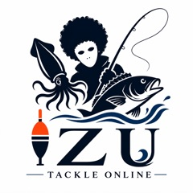

実際の釣り経験を活かした、釣具・釣り関連用品の販売
実際の釣行経験をもとに選定した釣具・釣り関連用品を取り扱っています。電気ウキ、LEDウキトップ、ライン、のべ竿、アオリイカ用品、釣り用接続パーツなど、実釣で使用する商品を、日本全国の一般のお客様・釣り愛好者に向けて販売しています。

伊豆釣具オンライン合同会社 Izu Tsurigu Online LLC
Business Achievements
「伊豆おかっぱり釣り だいちゃん」として、釣具・釣り関連用品を販売しています。
Yahoo!ショッピングのストアを確認する →2026年7月16日時点のYahoo!ショッピング公開情報

Product Planning & Field Testing
商品企画・仕入れ・フィールドテスト担当スタッフが、実釣を通じて感じた「こんな商品があれば便利」という視点を商品選定に活かしています。
商品の調査・選定、輸入代行会社を通じた海外仕入れ、入荷後の検品、商品撮影、商品ページ作成まで一貫して担当しています。また、ウキと交換用ウキトップ、釣り竿とリールなどを用途に合わせて組み合わせ、使いやすいセット商品として企画・販売しています。
Business History
個人事業として培った販売経験と事業基盤を引き継ぎ、法人として継続運営しています。
中島里香が屋号「伊豆おかっぱり釣り だいちゃん」でオンライン販売を開始。釣り糸、電気ウキ、釣り竿、リールなどを取り扱いました。
Yahoo!ショッピングとYahoo!オークション ストアへ同時に出店し、継続的なEC販売体制を構築しました。
事業規模の拡大に伴い、経営・会計体制と継続的な事業基盤を強化するため法人化。個人事業の在庫、仕入先、販売ノウハウ、両ストアの運営を法人へ引き継ぎました。
Business Overview
釣り用品を専門に扱うEC販売事業者として、商品販売から販売チャネル運営まで一貫して行っています。
実際の釣行経験をもとに選定した釣具・釣り関連用品を取り扱っています。電気ウキ、LEDウキトップ、ライン、のべ竿、アオリイカ用品、釣り用接続パーツなど、実釣で使用する商品を、日本全国の一般のお客様・釣り愛好者に向けて販売しています。
釣り竿、リール、ライン、電気ウキ、アオリイカ用品などを販売しています。
釣り用小物、仕掛け関連パーツなど幅広い商品を販売しています。
複数のオンライン販売チャネルを運営しています。
ウキと交換用ウキトップ、釣り竿とリールなどを用途に合わせて組み合わせて販売しています。
Business Workflow
商品選定と仕入れから、検品、販売、梱包、発送、お届け後の対応まで、役割を分担して継続的に運営しています。
実釣経験をもとに商品を調査・選定し、輸入代行会社を通じて海外から仕入れます。
本店所在地で商品を受け取り、数量、外観、仕様などを確認して在庫として管理します。
商品の特徴が伝わるように撮影し、仕様や使用方法を整理して商品ページを作成します。
法人名義のYahoo!各ストアに商品を掲載し、注文内容と在庫状況を確認します。
商品に合わせた資材を使用し、本店所在地で梱包と発送準備を行います。
郵便局への持ち込みや佐川急便の集荷などで発送し、お問い合わせや返品・交換に対応します。
Business Operations
登記上の本店所在地で、商品の保管、検品、梱包、発送準備など日々の業務を行っています。
Operating Structure
代表社員1名と従業員2名が役割を分担し、受注から発送まで日々の業務を行っています。
受注管理、顧客対応、梱包、発送、在庫管理を担当しています。
商品選定、仕入れ交渉・発注、検品、商品撮影、商品ページ作成、フィールドテストを担当しています。
ポスト投函、郵便局への持ち込み、配送業者の集荷対応を担当しています。
商品の保管、検品、梱包、発送は、登記上の本店所在地で行っています。別の倉庫や作業場所は使用していません。
Field Testing
実際の釣行を通じて、商品の使いやすさ、組み合わせ方、対象魚や釣り方との相性を確認し、取扱商品の選定やセット商品の企画に活かしています。
Sales Channels
各モール・マーケットプレイスにて、釣具および釣り関連用品を販売しています。
Product Categories
堤防釣りや磯釣りを中心に、ウキ釣り、夜釣り、ファミリーフィッシング向けの釣具・釣り関連用品を幅広く取り扱っています。
夜釣り向けの電気ウキやLEDウキトップなど、視認性と扱いやすさを重視した商品を取り扱っています。
PEラインやフロロカーボンなど、用途やターゲットに合わせて選べる商品を取り扱っています。
のべ竿・磯竿・投げ竿をはじめ、ファミリーフィッシング向けのリールも取り扱っています。
スナップ・スイベル・サルカンなど、釣りに必要な小物や仕掛け関連パーツを取り扱っています。
アオリイカ釣りで使用する自作カンナ、仕掛け関連用品、接続パーツなどを取り扱っています。
商品企画・取扱事例を見るCompany Profile
会社の基本情報、連絡先、事業内容を一覧で掲載しています。
Specified Commercial Transaction Act
販売条件、連絡先、返品交換条件を明確に掲載しています。
Privacy Policy
お問い合わせやお取引に伴い取得する個人情報を、適切に管理します。
制定・最終改定日：2026年7月20日
Contact
お取引、商品、法人情報に関するお問い合わせは、下記連絡先までお願いいたします。電話受付は平日9:00〜17:00、メールは24時間受け付けています。